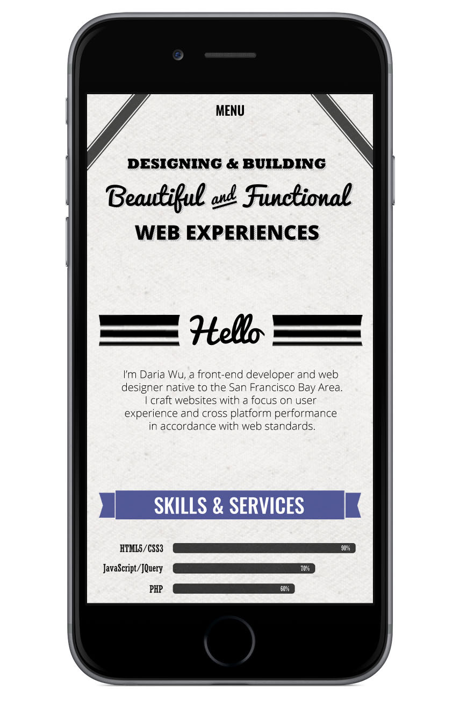
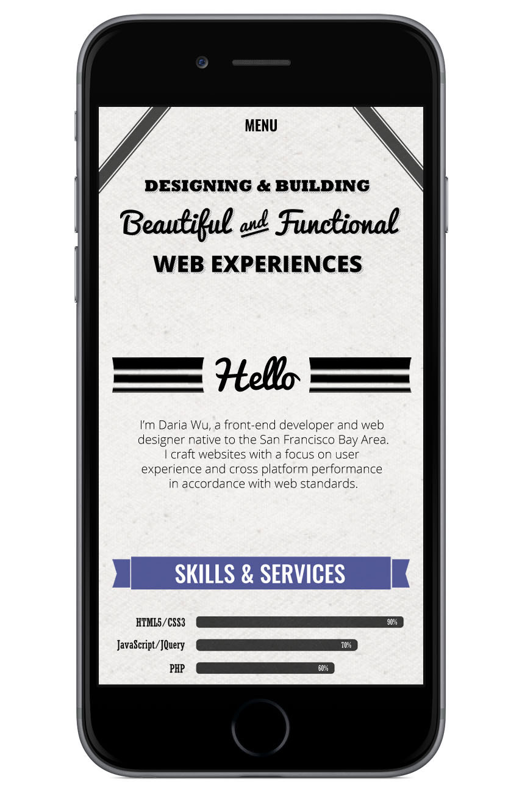

Beautiful and Functional Personal Site
 


The Beautiful and Functional personal site is a theme I created in my spare time brainstorming ideas for my own personal site. Graphics were created by me using Adobe Photoshop and Illustrator.
SKILLS USED: Web Design, Adobe Photoshop